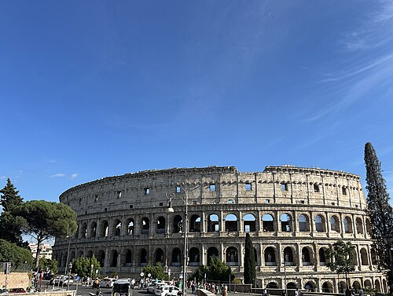
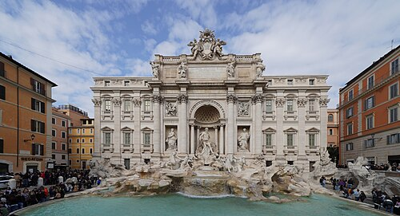

This map shows 20 of the most-searched sights in Rome as photo spots, ranked by how often people search for them: Colosseum, Trevi Fountain, St Peter's, Spanish Steps and Piazza Navona lead the list. Every spot has a pin on the subject and a phone icon showing where to stand, with tips for shooting it on your phone: which lens to use, how to frame it, a settings tip and the best time of day. Directions and Navigate buttons take you to the standing point on foot or by public transport. 3 spots are free to view; the full map is for members.
The 3 free photo spots
1Colosseum

The Colosseum is the great oval amphitheatre in the middle of Rome, and it is the largest standing amphitheatre in the world. Work began in AD 72 under the Emperor Vespasian and finished in AD 80 under his successor and heir, Titus, with more changes made later under Domitian. It was built on the flat ground of a low valley, where Nero's artificial lake had been filled in. The name is thought to come from a huge bronze statue of Nero that once stood close by. It could hold tens of thousands of spectators, and today you see the ruined outer wall, with its rows of arches, against the sky.
It photographs well because the shape is instantly recognisable and the repeating arches give a strong pattern. The broken edge of the wall adds drama, and the stone changes colour as the light changes. Because the building is so large, the main challenge is fitting it in without tilting the phone upwards, which makes the walls lean inwards. Stand back where you can, keep the phone level, and use the gridlines to line up the arches. For detail shots, move in or use the zoom to pick out a single bay of arches, the worn stone or a patch of sky through a gap. Expect other visitors in the frame, so a few quick shots as people move through will help. Look around the whole outside as well, because the ruined and the more complete sections give very different pictures.
Where it is: The Colosseum stands in the centre of Rome, just east of the Roman Forum, in the low ground between the Caelian, Esquiline and Palatine Hills. Colosseo station (Metro line B, with tram 3 and tram 8) and the Colosseo/Salvi N. tram stop are right beside it.
Shooting it on your phone
Lens: Start with the ultra-wide (0.5x) to fit the long curve of the walls in from close range, then switch to the default lens (1x) for a more natural look. Use the telephoto (2x to 5x, depending on your phone) for close-ups of the arches and stonework.
Where to stand: Stand on Via Nicola Salvi (raised section near the Colosseo metro exit, northern side). The Colosseum's most intact outer curve and facade, filling the frame from a slight height above the piazza.
Framing: Switch on the gridlines and keep the phone level so the walls do not lean. Put the curve of the arches along one of the lines, and leave a little sky above the top edge. For a second shot, zoom in on a single row of arches so the pattern fills the frame.
Settings tip: Tap the brightest part of the stone to focus, then pull the exposure slider down a little so the sky does not turn white. If you want the whole curve of the building, try panorama mode and move the phone slowly and steadily.
Best time: Early morning or late afternoon usually gives softer light and warmer stone colour, and often fewer people. After dark, if the building is lit, night mode can give a good result; hold the phone steady against a wall or railing.
2Trevi Fountain

The Trevi Fountain is a huge Baroque fountain built into the back of a palace, so it feels more like a stage set than a monument. It stands 26.3 metres high and 49.15 metres wide, and is described as the largest Baroque fountain in the world. Nicola Salvi designed it, and Giuseppe Pannini finished it in 1762. The backdrop is the Palazzo Poli, given a new façade with tall Corinthian pilasters and a triumphal-arch centrepiece. In the central niche stands Oceanus on a shell chariot, guided by tritons and sea-horses, with rockwork and water spilling forward into the small square.
It photographs well because there is so much to look at. The carved stone is a pale travertine, and the free-standing columns around the central niche create strong light and shade. The fountain was also restored between 2014 and 2015, when more than 100 LED lights were added to improve its night-time lighting, so the evening view is worth a try.
The main challenge for a phone is the size of the fountain compared with the space in front of it. Once you have that, switch to the zoom for close-ups of Oceanus and the sculpted figures. Expect people in the foreground. Treat them as scale, or wait for a gap and take a burst of shots.
Where it is: The fountain is in the Trevi district in the centre of Rome, set against the Palazzo Poli where Via de' Crocicchi, Via Poli and Via delle Muratte meet.
Shooting it on your phone
Lens: Start with the ultra-wide (0.5x) to fit the whole façade and the basin in one frame. Switch to 1x for a tidier, less stretched view, then use 2x-5x (depending on your phone) for close-ups of Oceanus and the horses.
Where to stand: Stand about 20 m south-east of the subject, at the phone icon on the map, and face north-west. This is far enough back to take in the full width, but in the main square people often fill the foreground.
Framing: Turn on gridlines and line up the central niche with the middle vertical line so the symmetry looks right. Keep the phone level, since tilting it will make the palace columns lean. Let the water and a few people fill the bottom of the frame to give a sense of size. For detail shots, use the zoom to isolate Oceanus, the tritons or the rockwork rather than moving closer.
Settings tip: Tap on the stonework to set focus, then drag the exposure slider down slightly so the bright travertine and water keep their detail. After dark, use night mode and hold the phone against a wall or railing to keep it steady. A Live Photo can capture the moving water, but a normal shot is better for the carvings.
Best time: Early morning is likely to be quieter. In the evening, the fountain's LED lighting gives a dramatic look, so try a few shots at dusk and after dark.
3St Peter's Basilica and Square

St Peter's is the great Renaissance church of Vatican City, and its dome is the high point of Rome's skyline. In front of it, Bernini's square opens out like a pair of arms. Two sweeping Tuscan colonnades, four columns deep, enclose an oval space with an Egyptian obelisk at its centre and a fountain on each side. Bernini designed the square between 1667 and 1676, and the obelisk had been raised on the spot in 1586. The present basilica was begun in 1506 and finished in 1626. It is counted as the largest church in the world by interior measure, and its dome is among the biggest anywhere.
It photographs well because the scale is easy to read. The wide façade, the dome rising behind it and the curving colonnades all line up along one axis, and the trapezoid-shaped approach gives the view real depth. People crossing the square give a quick sense of size.
From there the whole group of dome, façade and square fits in one frame. For a close-up of the colonnades or the façade details, walk into the square. Papal ceremonies here can draw between 15,000 and over 80,000 people, so expect the square to be very busy on those days. The basilica is a working church, so check the official site for entry rules before you go.
Where it is: St Peter's Basilica and Square sit in Vatican City, an independent enclave inside Rome, on the west side of the River Tiber.
Shooting it on your phone
Lens: Start with the default lens (1x) for the whole scene of dome, façade and colonnades. From where you stand, use 2x or 3x to bring the dome and façade closer without cropping the picture yourself. Switch to the ultra-wide (0.5x) once you are inside the square and want the curve of the colonnades.
Where to stand: Stand on Ponte Umberto I. Looking toward the Vatican along the Tiber, with Ponte Sant'Angelo leading the eye to the basilica's dome. For the colonnade shots, walk west into the square, roughly 5 minutes on foot.
Framing: Switch on the gridlines and put the dome on the central vertical line, so the façade sits level and symmetrical. In the square, use the 0.5x lens and stand near the centre, with the obelisk as a middle anchor. Keep the phone level, because ultra-wide lenses make the columns lean if you tilt them. Let a few people walk through the foreground to give a sense of scale.
Settings tip: Tap on the façade to set focus, then drag the exposure slider down a little so the sky does not wash out and the stone keeps its texture. Use Live Photos if you like a moving crowd, and try panorama only in the square, moving slowly and keeping the phone level.
Best time: Early morning usually gives softer light and fewer people, and the façade is likely to be lit from the front. Dusk is good for night mode, with the dome standing out against the darkening sky.
17 more spots for members
These spots are on the map as grey numbered pins. Where to stand, the phone tips, photos and directions for them come with Explorer membership.
- 4Spanish Steps and Piazza di Spagna · members
- 5Piazza Navona · members
- 6Pantheon · members
- 7Trastevere: Piazza di Santa Maria and the lanes · members
- 8Roman Forum and Arch of Titus · members
- 9Castel Sant'Angelo and Ponte Sant'Angelo · members
- 10Circus Maximus · members
- 11Palatine Hill · members
- 12Villa Borghese gardens and Pincio terrace · members
- 13Campo de' Fiori · members
- 14Appian Way (Via Appia Antica) · members
- 15Piazza del Popolo · members
- 16Baths of Caracalla · members
- 17Trajan's Column and the Imperial Forums · members
- 18Piazza Venezia and the Vittoriano · members
- 19Capitoline Hill (Piazza del Campidoglio) · members
- 20Archbasilica of St John Lateran · members
Get every spot with Explorer membership
Explorer opens every spot on every map in the library: where to stand, how to frame it on your phone and how to get there, plus the Xdatrys Maps app with maps saved on your phone for use without signal. $9.99 a month or $59.99 a year; cancel any time.
Join Explorer Compare free and Explorer
Not ready to join?
Get Pocket Lens, our free daily smartphone travel photography newsletter.
Free, and you can unsubscribe at any time. If the form does not show, sign up on our newsletter page.
Questions
What are the top photo spots in Rome?
The first three on this map are Colosseum, Trevi Fountain and St Peter's. They are ranked by how often people search for them. The full map has 20.
Where should I stand to photograph the Colosseum?
Stand on Via Nicola Salvi (raised section near the Colosseo metro exit, northern side). Start with the ultra-wide (0.5x) to fit the long curve of the walls in from close range, then switch to the default lens (1x) for a more natural look.
When is the best time to photograph the Trevi Fountain?
Early morning is likely to be quieter. In the evening, the fountain's LED lighting gives a dramatic look, so try a few shots at dusk and after dark.
How do I get to St Peter's?
Take the Metro: on Metro line A, Cipro is the nearest station.
Credits
Map data © OpenStreetMap contributors (ODbL); base map built with Protomaps from OpenStreetMap data. Photos from Wikimedia Commons, credited under each photo with their licence. Background reading for the free spots: Colosseum, Trevi Fountain, St. Peter's Basilica, St. Peter's Square (Wikipedia, CC BY-SA). Access rules and opening times change: check before you go.